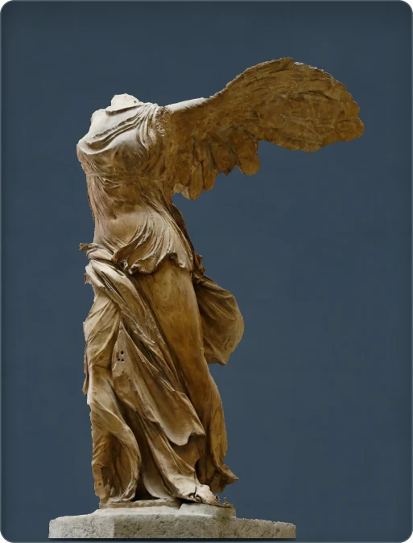

Victoire de Samothrace

Les plis du marbre dessinent le vent
Dans la Victoire de Samothrace, Niké, déesse de la victoire, se pose sur la proue d’un navire. Le vêtement plaqué contre son corps et les plis soulevés donnent l’impression du vent. Découverte à Samothrace en 1863, cette sculpture grecque date de 200–175 av. J.-C. La figure est en marbre de Paros, le navire en marbre de Lartos. L’aile droite a été reconstituée en plâtre.
Grèce, époque hellénistique · 200–175 av. J.-C. · marbre de Paros · Musée du Louvre, Paris · inv. Ma 2369
Crédit photographique
Photo : Marie-Lan Nguyen / Wikimedia Commons · domaine public · fond modifié

Suivre les plis
Commencez par le vêtement qui épouse le corps, puis cherchez les plis qui s’en écartent. Le tissu plaqué donne un repère pour lire la pose. Les plis soulevés prolongent le mouvement en dehors de la silhouette. Repérez le passage de l’un à l’autre. Il rend le vent perceptible.
Vous pouvez refaire le parcours en partant cette fois d’un pli soulevé. Suivez-le jusqu’au tissu plaqué contre le corps. Vous percevrez d’abord l’élan du tissu, puis la présence de la figure. Cette comparaison aide à comprendre comment la pose et le vêtement produisent ensemble l’impression de mouvement.
La figure et la proue
En observant d’abord la figure seule, on voit un corps et un vêtement en mouvement. En tenant compte du navire, on peut se demander où la figure s’apprête à prendre appui. La proue situe le geste. Elle permet de lire la scène comme une arrivée et de relier le mouvement du vêtement à celui du corps.
Relisez ensuite la distinction entre les deux marbres. Celui de Paros forme la figure, celui de Lartos le navire. Cette répartition permet de décrire séparément ce que vous observez dans le vêtement et ce que vous comprenez du support. La notice précise les matériaux que la photographie seule ne permet pas toujours de distinguer.
Ce que change la reconstitution
L’aile droite a été reconstituée en plâtre. Ce détail invite à se poser deux questions. Que raconte la silhouette telle qu’elle se présente aujourd’hui ? De quoi sont faites ses différentes parties ? Même si le regard passe naturellement du tissu à l’aile, la description du matériau doit tenir compte de la reconstitution.
Revenez enfin aux plis du vêtement. Essayez de décrire leur forme avant de nommer le mouvement qu’ils évoquent. En distinguant le pli que vous observez du vent que vous imaginez, vous pouvez expliquer précisément comment un détail de la sculpture contribue à donner l’impression d’une figure qui se pose.